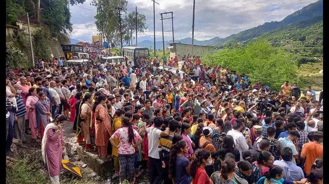

Outrage over RSS member’s Facebook post that blamed Ankita Bhandari’s father; FIR filed
 1, 2, 3 hindustantimesIn one of the many protests organised to seek justice for Ankita Bhandari, people blocked the Rishikesh-Badrinath highway at Srinagar in Pauri Garhwal district on Sunday, Sept. 25. (PTI)
DEHRADUN: A first information report (FIR) has been filed against a local Rashtriya Swayamsewak Sangh (RSS) member over a Facebook post that appeared to blame Ankita Bhandari’s family, particularly her father and brother, for her death, the Dehradun Police said on Wednesday